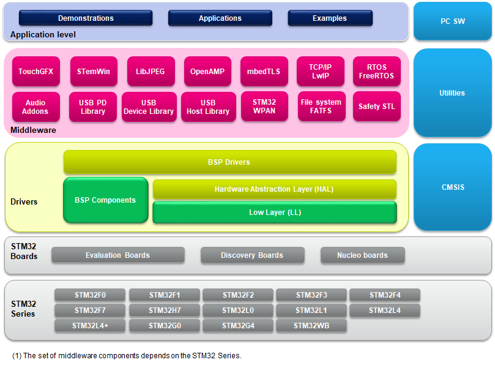

Release Notes for X-CUBE-CLASSB-G0
Expansion package for STM32Cube
Copyright © 2022 STMicroelectronics
Purpose
The X-CUBE-CLASSB-G0 Self-Test Library (STL) is an application-independent software test library released by ST to implement a relevant subset of safety mechanisms applicable to generic parts of the STM32G0 Series microcontrollers required by the safety standard targeting inhouse appliances.
STL is an autonomous software, which executes on application demand selected tests to detect HW issues and reports the outcomes to the application. STL is delivered partly in object code (for the library itself) and partly in source code for the user interfaces definition and user parameters settings. Therefore, the STL is compilation tool chain-agnostic, so it can be compiled by any standard C-compiler.
The X-CUBE-CLASSB-G0 is built on top of STM32Cube software technology and follow principles derived from another ST safety library dedicated for industrial appliances (X-CUBE-STL).
The X-CUBE-CLASSB-G0 software comes with implementation example running on NUCLEO-U575ZI-Q.
X-CUBE-CLASSB-G0 software features:
- STL tests of the CPU Arm® core.
- STL tests of the Flash memory.
- STL tests of the RAM.
- This implementation example provides template of a user defined module dedicated for testing the CPU clock system
The figure below shows the overall architecture.

Here is the list of references to user documents:
- UM2455 STM32G0 series safety manual
- UM3083 STM32G0 Series UL/CSA/IEC 60730-1/60335-1 Class B self-test library user guide
Update History
Main Changes
First release
Contents
Projects information
The X-CUBE-CLASSB-G0 package:
- comes with a set of Applications running on STMicroelectronics board, STM32G071RB-Nucleo
- offers full scope of Applications ported on 3 toolchains
| Name | Version | Release note |
|---|---|---|
| Projects | V4.0.0 | release note |
Components
The components flagged by “” have changed since the previous release. “” are new.
Drivers
| Name | Version | Release note |
|---|---|---|
| Cortex®-M CMSIS | v5.6.0_cm0 | release note |
| STM32G0xx CMSIS | V1.4.2 | release note |
| BSP STM32G0xx_Nucleo | V1.1.2 | release note |
| STM32G0 HAL/LL APIs | V1.4.4 | release note |
Middlewares
| Name | Version | Release note |
|---|---|---|
| Safety Self Test Library (STL) | V4.0.0 | release note |
Documents
The components flagged by “” have changed since the previous release. “” are new.
| Name | Document |
|---|---|
| STM32G0 Series UL/CSA/IEC 60730-1/60335-1 Class B self-test library user guide | To request to ST to get the most updated version |
Development Toolchains and Compilers
- IAR Embedded Workbench for ARM (EWARM) toolchain V9.20.1 + ST-Link
- RealView Microcontroller Development Kit (MDK-ARM) toolchain V5.36 + ST-Link
- STM32CubeIDE V1.9.0
Supported Devices and boards
- STM32G071RB Nucleo kit RevB (MB1360 B-01))
Known Limitations
- None
Backward Compatibility
- Not applicable